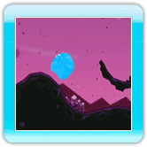

L’état liquide est la première forme que vous prenez lorsque vous jouez à Fluidity. Sous cette forme, les pouvoirs suivants sont disponibles :
·Sauter
Déplacez rapidement la manette Wii Remote vers le haut afin de sauter. Plus vous déplacerez la Wii Remote rapidement, plus vous sauterez haut. Vous pouvez sauter à n’importe quel moment, même si vous ne touchez pas le sol.
·Regrouper

Par moments, vous devrez vous assurer que toute votre eau reste en un seul groupe cohérent. Dans ces moments là, le pouvoir de regrouper sera bien utile.
Une fois ce pouvoir débloqué, il suffit de maintenir  enfoncé pour inciter toutes les gouttes d’eau à se regrouper. Ceci est particulièrement utile pour ne pas perdre d’eau lors des sauts.
enfoncé pour inciter toutes les gouttes d’eau à se regrouper. Ceci est particulièrement utile pour ne pas perdre d’eau lors des sauts.
·Exploser
 La flaque d’eau explosera et se jettera dans toutes les directions si vous maintenez enfoncé pendant un certain temps lorsque vous regroupez votre eau. Bien qu’il faille éviter les explosions dans certaines situations, elles peuvent parfois être utiles pour débloquer des passages et ramasser des bulles d’eau situées dans des endroits difficiles d'accès.
La flaque d’eau explosera et se jettera dans toutes les directions si vous maintenez enfoncé pendant un certain temps lorsque vous regroupez votre eau. Bien qu’il faille éviter les explosions dans certaines situations, elles peuvent parfois être utiles pour débloquer des passages et ramasser des bulles d’eau situées dans des endroits difficiles d'accès.
·Jaillir
 Une fois que vous aurez débloqué le pouvoir de jaillir, appuyez sur
Une fois que vous aurez débloqué le pouvoir de jaillir, appuyez sur  pendant que vous regroupez pour faire jaillir l’eau en l’air. Appuyez vers le haut sur pour que l'eau jaillisse verticalement, ou appuyez à la fois vers le haut et vers la droite ou la gauche pour contrôler la direction du jaillissement. Plus votre regroupement le précédant sera long, plus le jaillissement sera haut. Ceci peut être utile pour atteindre des endroits difficiles ou pour vaincre des ennemis volants.
pendant que vous regroupez pour faire jaillir l’eau en l’air. Appuyez vers le haut sur pour que l'eau jaillisse verticalement, ou appuyez à la fois vers le haut et vers la droite ou la gauche pour contrôler la direction du jaillissement. Plus votre regroupement le précédant sera long, plus le jaillissement sera haut. Ceci peut être utile pour atteindre des endroits difficiles ou pour vaincre des ennemis volants.